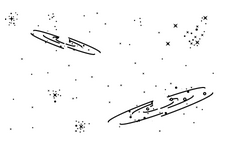
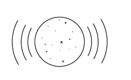
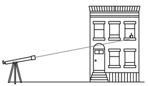
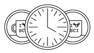
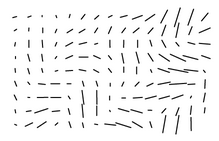
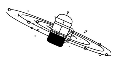
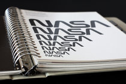
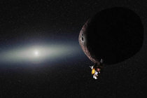
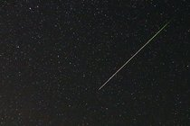
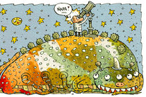

SPACE & COSMOS
Space Ripples Reveal Big Bang's Smoking Gun
By DENNIS OVERBYEMARCH 17, 2014
Alan Guth was one of the first physicists to hypothesize the existence of inflation, which explains how the universe expanded so uniformly and so quickly in the instant after the Big Bang 13.8 billion years ago.
Rick Friedman for The New York Times
CAMBRIDGE, Mass. — One night late in 1979, an itinerant young physicist named Alan Guth, with a new son and a year’s appointment at Stanford, stayed up late with his notebook and equations, venturing far beyond the world of known physics.
If corroborated, Dr. Kovac’s work will stand as a landmark in science comparable to the recent discovery of dark energy pushing the universe apart, or of the Big Bang itself. It would open vast realms of time and space and energy to science and speculation.
The Theory of Inflation
Astronomers have found evidence to support the theory of inflation, which explains how the universe expanded so uniformly and so quickly in the instant after the Big Bang 13.8 billion years ago.
|  |  |  | |
| THE UNIVERSE is just under 14 billion years old. From our position in the Milky Way galaxy, we can observe a sphere that is now about 92 billion light-years across. But there's a mystery. Wherever we look, the universe has an even temperature. | NOT ENOUGH TIME The universe is not old enough for light to have traveled the vast distance from one side of the universe to the other, and there has not been enough time for scattered patches of hot and cold to mix into an even temperature. | DISTANT COFFEE At a smaller scale, imagine using a telescope to look a mile in one direction. You see a coffee cup, and from the amount of steam, you can estimate its temperature and how much it has cooled. | COFFEE EVERYWHERE Now turn around and look a mile in the other direction. You see a similar coffee cup, at exactly the same temperature. Coincidence? Maybe. But if you see a similar cup in every direction, you might want to look for another explanation. |
|  |  |  | |
| STILL NOT ENOUGH TIME There has not been enough time to carry coffee cups from place to place before they get cold. But if all the coffee cups were somehow filled from a single coffee pot, all at the same time, that might explain their even temperature. | INFLATION solves this problem. The theory proposes that, less than a trillionth of a second after the Big Bang, the universe expanded faster than the speed of light. Tiny ripples in the violently expanding energy field eventually grew into the large-scale structures of the universe. | FLUCTUATION Astronomers have now detected evidence of these ancient fluctuations in swirls of polarized light in the cosmic background radiation, which is energy left over from the early universe. These are gravitational waves predicted by Einstein. | EXPANSION Returning to our coffee, imagine a single, central pot expanding faster than light and cooling to an even temperature as it expands. That is something like inflation. And the structure of the universe mirrors the froth and foam of the original pot. |
By LARRY BUCHANAN and JONATHAN CORUM
Confirming inflation would mean that the universe we see, extending 14 billion light-years in space with its hundreds of billions of galaxies, is only an infinitesimal patch in a larger cosmos whose extent, architecture and fate are unknowable. Moreover, beyond our own universe there might be an endless number of other universes bubbling into frothy eternity, like a pot of pasta water boiling over.
‘As Big as It Gets’
In our own universe, it would serve as a window into the forces operating at energies forever beyond the reach of particle accelerators on Earth and yield new insights into gravity itself. Dr. Kovac’s ripples would be the first direct observation of gravitational waves, which, according to Einstein’s theory of general relativity, should ruffle space-time.
Confused, Dr. Linde called out to his wife, asking if she had ordered anything.
We might never know what happened before inflation, at the very beginning, because inflation erases everything that came before it. All the chaos and randomness of the primordial moment are swept away, forever out of our view.
“If you trace your cosmic roots,” said Abraham Loeb, a Harvard-Smithsonian astronomer who was not part of the team, “you wind up at inflation.”
A version of this article appears in print on March 18, 2014, on page A1 of the New York edition with the headline: Space Ripples Reveal Big Bang’s Smoking Gun. Order Reprints| Today's Paper|Subscribe
|  |  | |
| $79 for an Out-of-Date Book About a Modern NASA Logo | NASA's New Horizons Spacecraft Has Next Mission After Pluto | Jacob Bekenstein, Physicist Who Revolutionized Theory of Black Holes, Dies at 68 |
|  |  | |
| Where to Watch the Perseid Meteor Shower in the New York Area | OUT THEREThe Flip Side of Optimism About Life on Other Planets | Rosetta's Philae Lander Discovers a Comet's Organic Molecules |
- Kentucky Clerk Denies Same-Sex Marriage Licenses, Defying Court
- Google's Driverless Car Runs Into Problem: Cars With Drivers
- Murder Rates Rising Sharply in Many U.S. Cities
- Thomas L. Friedman: Our Radical Islamic BFF, Saudi Arabia
- Obama Clinches Vote to Secure Iran Nuclear Deal
- Op-Ed Contributor: Putting Donald Trump on the Couch
- Contributing Op-Ed Writer: Was It Cancer? Getting the Diagnosis
- Sony Altered 'Concussion' Film to Prevent N.F.L Protests, Emails Show
- Taking Note: God vs. the Constitution in Kentucky
- Op-Ed | Thomas B. Edsall: What Donald Trump Understands About...